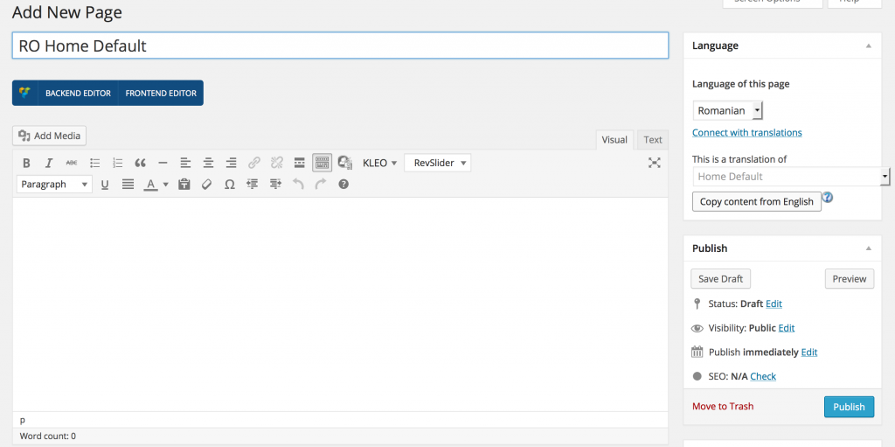

First, you need to to purchase a recent version of WPML, including the String Translation and Translation Management modules.
Install and activate the core WPML plugins (WPML Multilingual CMS, WPML String Translation, WPML Translation Management), and then other WPML plugins that may depend on them.
Set up WPML from WPML->Languages first.
See WPML Getting Started Guide for complete reference, but the initial simple three-step setup is self-explanatory, asking you to choose your default language, a set of active languages, and a language selector.
How to translate Pages, Posts and other post types?
To translate a page you need to go to WP Admin, select Pages from Dashboard and in the list you will see columns for each active language, with a pencil icon (for "edit translation") or a "+" icon (for "add translation") next to each page. Go ahead and edit or add the translated page for "Home Default".
Right now you just need to translate your page into the new language.
How to translate custom post types and taxonomies?
KLEO comes with extra custom post types such as portfolios and testimonials, and custom taxonomies. In order to get a similar interface for translation/duplication as for posts and pages, you need to go to:
WPML->Translation Management
...and select the tab "Multilingual Content Setup".
...and other strings in your site!
To translate strings you need to follow the procedure for Theme and Plugin Localization. Go to:
WPML->Theme and Plugin Localization
...and click on "Scan the theme for strings" and you will see theme strings and which ones are translated or not.